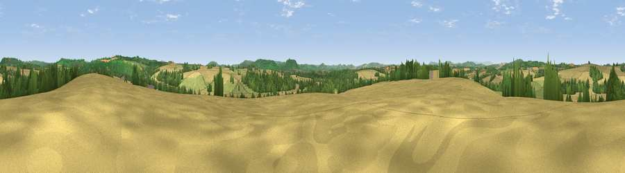

Viewpoint near Foy
#23506 in England · top 54% of its area beats it · near Foy · footpathWhere it is
The exact computed spot (SO 58825 28325). Click the marker for map links.
Public access: a public right of way passes within 11 m of this spot. Computed from Natural England's CRoW access layer and OpenStreetMap rights of way — not the legal definitive map. Always verify locally.
The view, rendered

A 360° render of this exact spot computed from the terrain model, tree cover and land cover — summer colours, afternoon light, calibrated against photographs of famous viewpoints. Real trees, hedges and buildings will differ in detail.
The panorama
Grey silhouette: terrain skyline in each direction (720 bearings, Earth curvature and refraction included). Dashed green: skyline with trees (+15 m) and buildings (+8 m) as obstacles. Blue strip: how far the ground is visible on each bearing.
Where the view opens
Wedge length = distance to the farthest visible ground on that bearing (vegetation-aware). Rings at 10, 25 and 50 km.
What fills the view
56% cropland · 24% woodland · 18% grassland ·
Angular shares of the visible panorama (visual magnitude), not map area. Landscape diversity 0.46 (0–1 Shannon).
Key numbers
More beautiful places nearby
The staircase of upgrades: each row has a higher view potential than everything closer. Driving times are estimates from straight-line distance, calibrated against real road routing — check an actual route before setting out.
| Place | Direction | Drive | Score |
|---|---|---|---|
| Viewpoint near How Caple | ENE · 4 km | ~9 min | 72.2 |
| Viewpoint near Fownhope | N · 5 km | ~10 min | 76.0 |
| Chase Wood Hill | SSE · 6 km | ~13 min | 77.6 |
| Viewpoint near Woolhope | NE · 7 km | ~14 min | 80.7 |
| Viewpoint near Putley | NNE · 10 km | ~20 min | 80.9 |
| Viewpoint near Tarrington | NNE · 11 km | ~21 min | 81.4 |
| Seagar Hill | NNE · 11 km | ~21 min | 82.1 |
| Garway Hill | WSW · 16 km | ~28 min | 84.6 |
51.95188, -2.60053 · source: screening · position refined by local search. Computed location — check access rights before visiting.